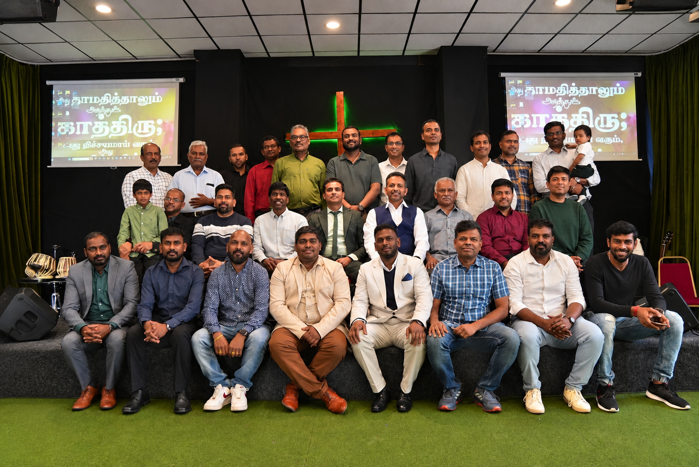
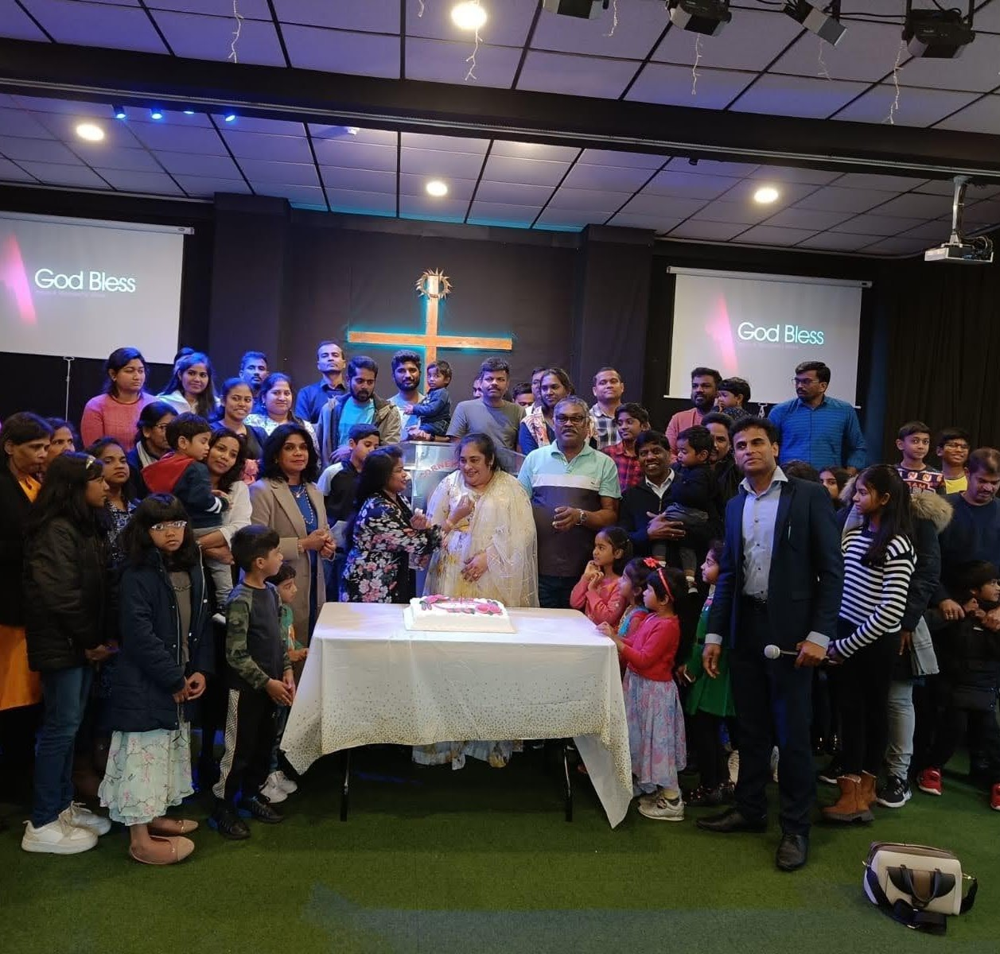

About Cornerstone Church of God
Rooted in Jesus Christ, established in Coventry in 2001, and faithfully serving our community in faith, hope, and love.
Rooted in Jesus Christ, established in Coventry in 2001, and faithfully serving our community in faith, hope, and love.
Cornerstone Church of God was established in 2001 in Coventry as a spiritual haven for Tamil-speaking families, students, and professionals making the United Kingdom their home.
Founded upon vibrant praise, faithful exposition of the Scriptures, and unconditional Christian love, our congregation has grown into a mature, multi-generational family of believers worshipping weekly on Howard Street.
On 16 March 2025, by God's gracious providence, we celebrated the founding of our first branch — Rugby Tamil Cornerstone Church of God — expanding our reach to bless families across Warwickshire.
Explore Rugby Branch →
"The stone which the builders rejected has become the chief cornerstone." — Psalm 118:22
In classical architecture, the cornerstone is the first stone set in the construction of a masonry foundation. All other stones will be set in reference to this stone, determining the position of the entire structure.
In the same way, Jesus Christ is our Chief Cornerstone (Ephesians 2:20). He is the anchor and measure of our faith, doctrine, worship, and community life. Everything we do is aligned to Him.
The cornerstone binds different walls into one coherent temple. Christ unites us as one family across Tamil and English cultures, older generations, and vibrant youths.
Our vision is to build a vibrant, Bible-believing, Christ-centred church where people can worship God in spirit and in truth, grow in His holy Word, experience the miraculous power of prayer, and share the Good News of salvation through Jesus Christ.
"I will build My church, and the gates of Hades shall not prevail against it."
Through worship, prayer, fellowship, and outreach, we seek to see lives transformed, families strengthened, marriages healed, and believers united in faith and unconditional love throughout Coventry, Warwickshire, and beyond.
"Not by might nor by power, but by My Spirit, says the Lord of hosts."

Cornerstone Church is shepherded by Pastor Clint Pratheepan, whose heart is dedicated to expository Scripture preaching, spiritual mentorship, pastoral counseling, and prayer.
Whether you are walking through life's deepest trials, celebrating new family milestones, or seeking answers about faith in Christ, Pastor Clint and our elders are always accessible to pray with you.
Join us this coming Sunday at Howard Street in Coventry or Oliver Street in Rugby. A warm cup of tea and a loving congregation await you.